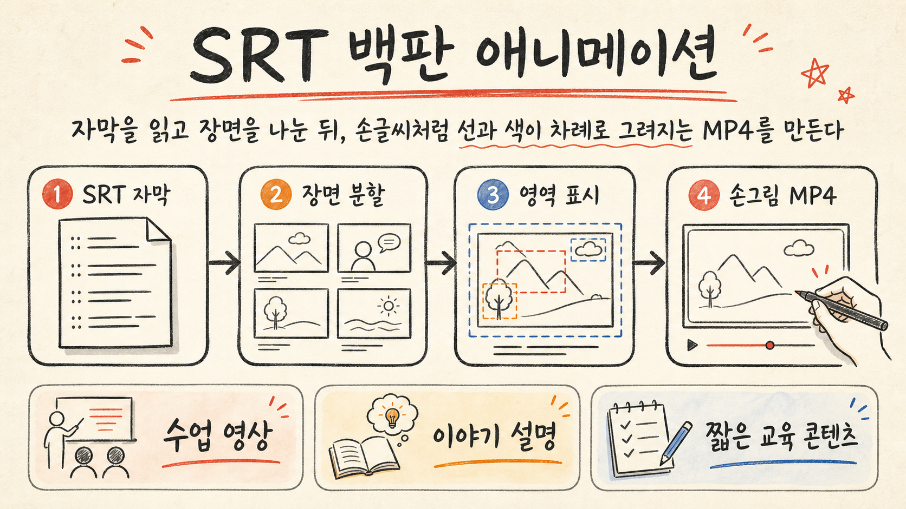

SRT를 읽어 25–35초 단위 장면으로 나누고, 각 장면의 핵심 의미를 영상 제작 단위로 바꿉니다.

geeklee/srt-whiteboard-animationSRT 자막을
SRT 자막을
백판 손그림 영상으로
자막을 기준으로 장면을 나누고, 각 요소가 순서대로 그려지는 따뜻한 종이 질감의 MP4를 만드는 Python 기반 AI skill 저장소입니다.
누구에게 좋나강의·스토리·짧은 교육 영상 스크립트를 손그림 스타일로 바꾸고 싶은 제작자
한 줄 판단완성 앱보다는 “SRT → 분할 → 표시 → 렌더” 제작 파이프라인 예제로 보는 게 맞습니다.
먼저 볼 것자기 SRT와 한 장면 이미지로 annotation 품질과 렌더 시간을 먼저 확인해야 합니다.
annotation.json으로 사물·인물·배경 영역을 지정하고 sequence, startMs, protectedRegions로 노출 순서를 관리합니다.
사각형 와이프가 아니라 grid/skeleton 경로를 따라 ink → color 단계로 손글씨처럼 그려지는 MP4를 만듭니다.
prepare_env로 venv와 opencv/numpy/av/Pillow 설치가 진행됐고, sample SRT 파싱 및 예제 장면의 짧은 MP4 렌더가 성공했습니다.
render_annotation_preview.py는 Windows 폰트 경로(C:/Windows/Fonts/msyh.ttc)가 하드코딩되어 Linux에서 바로 실패했습니다.
수업용 짧은 설명 영상이나 스토리형 콘텐츠 자동 제작 실험에는 좋지만, 운영 자동화 전에는 폰트·브라우저 미리보기·샘플별 annotation 품질을 먼저 검증해야 합니다.